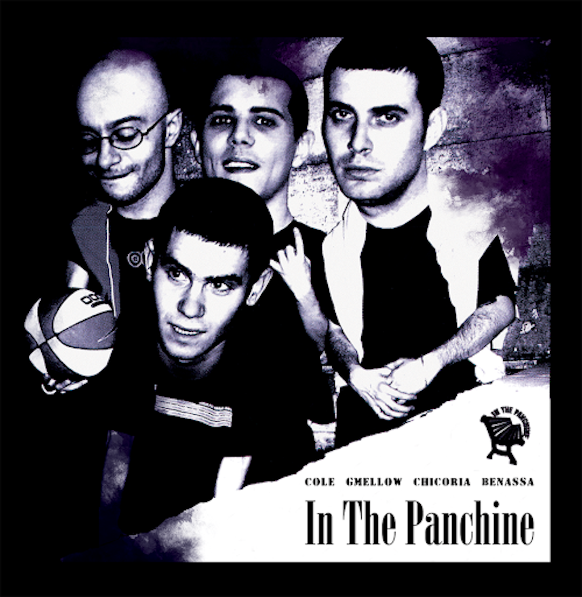

In The Panchine è un progetto romano nato ufficialmente nel 2004, la volontà era quella di fare una cosa completamente cazzona, senza senso, ma che un'importanza di fondo ce l'avesse.
Non esistono tematiche vere e proprie all'interno dei testi di In The Panchine, se non una reinterpretazione teatrale di episodi e circostanze di vita romana. "I nostri dischi non hanno quella sonorità classica del rap, che dovrebbero avere. Forse è un altro dei segreti e dei punti di forza dei nostri lavori" spiega Benassa. Brani come “Deadly Combination” sono diventati letteralmente fenomeni nazionali, ed è probabile che pure il vostro vicino di casa ciellino sappia il testo a memoria, esattamente come voi.